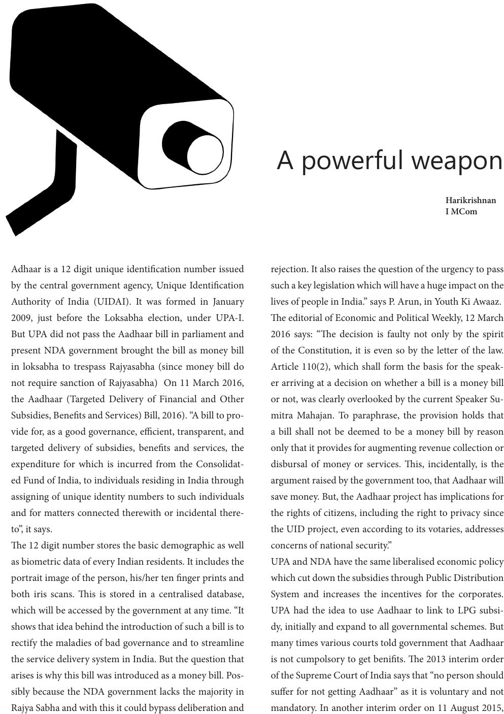

Adhaar is a 12 digit unique identication number issued
by the central government agency, Unique Identication
Authority of India (UIDAI). It was formed in January
2009, just before the Loksabha election, under UPA-I.
But UPA did not pass the Aadhaar bill in parliament and
present NDA government brought the bill as money bill
in loksabha to trespass Rajyasabha (since money bill do
not require sanction of Rajyasabha) On 11 March 2016,
the Aadhaar (Targeted Delivery of Financial and Other
Subsidies, Benets and Services) Bill, 2016). “A bill to pro-
vide for, as a good governance, ecient, transparent, and
targeted delivery of subsidies, benets and services, the
expenditure for which is incurred from the Consolidat-
ed Fund of India, to individuals residing in India through
assigning of unique identity numbers to such individuals
and for matters connected therewith or incidental there-
to”, it says.
e 12 digit number stores the basic demographic as well
as biometric data of every Indian residents. It includes the
portrait image of the person, his/her ten nger prints and
both iris scans. is is stored in a centralised database,
which will be accessed by the government at any time. “It
shows that idea behind the introduction of such a bill is to
rectify the maladies of bad governance and to streamline
the service delivery system in India. But the question that
arises is why this bill was introduced as a money bill. Pos-
sibly because the NDA government lacks the majority in
Rajya Sabha and with this it could bypass deliberation and
rejection. It also raises the question of the urgency to pass
such a key legislation which will have a huge impact on the
lives of people in India.” says P. Arun, in Youth Ki Awaaz.
e editorial of Economic and Political Weekly, 12 March
2016 says: “e decision is faulty not only by the spirit
of the Constitution, it is even so by the letter of the law.
Article 110(2), which shall form the basis for the speak-
er arriving at a decision on whether a bill is a money bill
or not, was clearly overlooked by the current Speaker Su-
mitra Mahajan. To paraphrase, the provision holds that
a bill shall not be deemed to be a money bill by reason
only that it provides for augmenting revenue collection or
disbursal of money or services. is, incidentally, is the
argument raised by the government too, that Aadhaar will
save money. But, the Aadhaar project has implications for
the rights of citizens, including the right to privacy since
the UID project, even according to its votaries, addresses
concerns of national security.”
UPA and NDA have the same liberalised economic policy
which cut down the subsidies through Public Distribution
System and increases the incentives for the corporates.
UPA had the idea to use Aadhaar to link to LPG subsi-
dy, initially and expand to all governmental schemes. But
many times various courts told government that Aadhaar
is not cumpolsory to get benits. e 2013 interim order
of the Supreme Court of India says that “no person should
suer for not getting Aadhaar” as it is voluntary and not
mandatory. In another interim order on 11 August 2015,
A powerful weapon
Harikrishnan
I MCom